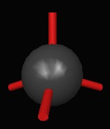

In version 7.0 a new graphical molecule editor was added to MacMolPlt. Its goal is to make it fast and easy to create starting structures without placing significant restraints on your freedom to build the molecule any way you wish. Note there is unlimited undo/redo support while in the molecule builder. However the undo buffer is flushed when you exit build mode. Below is a brief introduction to the features of the builder.
Activate the molecule editor by choosing the "Enable Molecule Builder" menu item from the "Builder" menu. This will display a toolbar at the top of the molecule display. You can activate the builder for empty windows or with an existing geometry. However, if you modify an existing structure, all data such as orbitals and normal modes will be lost. The three buttons control the mode of operation. "View" mode is the normal rotation/translation mode used throughout MacMolPlt. You can select atoms, but you cannot edit them. "Select" mode allows you to select all atoms in a region of the window by drawing a selection box around them. Finally "Edit" mode allows you to add/delete/modify the molecular structure. While in "Edit" mode a left-click into empty space will add a new atom (or atoms, depending on what's selected in the Build Tools palette) to that spot. A left-click and drag will rotate as per normal.
To add atoms, make sure you are in Edit mode. Display the Build Tools palette ("Show Build Tools" menu item under the "Builder" menu) and choose an atom type in the Periodic Table tab. You can also select an atom type at any time in edit mode simply by typing its atomic symbol. Choose the number of atoms that you wish the new atom to bond to by selecting the appropriate "coordination number". (For an atom already added to the model, you can right click on it and select the coordination number from the popup menu.) Now, left-click on a blank portion of the molecular display to add the atom. If carbon is selected you should see similar to the image at the right.
The red cylinders are open "bonding sites." The number and configuration of these bonding sites is determined by the atom's coordination number and lone pair count. To add a new atom to one of the bonding sites (at an appropriate bond distance) just click on that bond site. Bonding sites can be toggled off in Edit mode by unselected "Show Bonding Sites" in the "Build" menu. Sites are not displayed in View mode.
Once an atom is added you can click on it and drag it around as desired. See the modifying subgroups section later for more information on moving groups of atoms around. If you right-click (or control+left-click) on a bond you can change the bond order. If at least one atom in the bond has no other bonds, the changed bond's length will be adjusted for the new bond order.
To quickly fill out the remaining bond sites with Hydrogens use the "Add Hydrogens" menu item from the "Builder" menu.
Occasionally you will need to manually add or modify bonds. The are two ways to add a bond. You can select both atoms then right-click (or control+left-click) on one of them and select the "Add Bond" item from the pop-up menu. Or you can click and drag from the bonding site of interest on one atom to a bonding site on the other atom. To modify or delete bonds simply right-click on them. You can change the bond order or delete the bond entirely. Changing the bond order will not change the bond site arrangement on the atom (ie the coordination number is NOT changed), but it will change the bond length (if one of the atoms has no other bonds), but it will not rearrange existing bonds.
There are several ways to transform groups of atoms in the builder, but first you need to get the atom(s) of interest selected. To move an individual atom, just left-click on it and drag it around. To select multiple atoms you can either select them individually (holding down the Control/Command key to extend the selection) or as a group using the select button (Tip: While in "Edit" mode you can hold down the "Alt" key to temporarilly switch to "Select" mode. Then release the Alt key to continue in "Edit" mode). Now if you left-click and drag on any of the selected atoms you will translate them all.
To rotate a functional group around a bond, select the atoms in the functional group. Then left-click on the bond about which the rotation should occur (it doesn't have to be a bond attached to a selected atom) and drag up and down. The dragging motion will be rotate the selected atoms about the axis of the bond.
A selected set of atoms can easily be transformed to bond to an existing, fixed atom at an open bonding site. First, select only the atom(s) that you want to transform. Find which of these atoms you want to bond to, and make sure it has an open bonding site. Hold the Control/Command key while left-clicking on that site, and drag to the bonding site of the fixed atom. When you release the mouse, the selected atoms will be rotated and translated so that its structure is preserved.
You can also rotate a selected set of atoms around its centroid, which is calculated as the mean of the selected atoms' coordinates. To rotate, first select two or more atoms and enter Edit mode. Then, hold down the Control or Command key and click and hold the left mouse button down on one of the selected atoms. While the button is held down, drag the mouse and the group will rotate around its centroid. This makes it possible to spin a solvent molecule, for example, in place.
In some cases you may want to constrain the movement of certain atoms to preserve bond lengths or angles. This can be done by first inserting annotations to connect the relevant atoms. For example, to adjust the length of bond but preserve its direction, select a base atom and an atom you wish to move relative to the first. Right-click on either atom and select "Measure length." A length annotation will appear between the two atoms. Right-click on the annotation and select "Constrain Atoms." Now, select just one of the two atoms and drag it around the scene. (If both are selected, the atoms will move in tandem and the constraint will not be enforced.) Its position will stay fixed along the original path between the atoms, though its distance to the other atom will change. To set the length exactly, right-click on the annotation and select "Set length." The second atom of the length annotation will be shifted according the desired length. Similar constraints are available for angle and dihedral angle annotations. However, only one annotation can be constrained at a time.
For this constrained motion to work properly, it is important to make sure only one atom from the annotation is selected, since all selected atoms will be moved. The remaining atoms in the annotation serve as the basis of motion and should remain fixed in their positions to generate expected results. Also note that atoms not involved in the annotation can be moved relative to the annotation atom. To apply this constrained motion to other atoms, make sure they are selected and guide the entire set's movement by dragging only the atom in the constrained annotation.
To facilitate quick construction of molecular structures, the Build Tools palette also contains a Prototypes library. From this, you can browse through a collection of system- and user-defined structures. To view these structures, choose the appropriate category in the dropdown menu and select the structure in the list below. A simple, interactive preview is displayed to the right. The displayed structure can be rotated with a left-click and drag, and scaled with a middle-click (or Shift and left-click) and drag.
Adding a prototype is just like adding an atom from the periodic table. Select the prototype and then click on a blank portion of the molecular display. All atoms of the prototype will be dropped into place.
To bond a prototype to an existing atom, first note that one of the hydrogen atoms in the prototype is marked in the Prototypes preview. This hydrogen will be pruned in order to free a bonding site for the prototype. You can alter which atom is pruned by clicking on a different hydrogen atom. Now, return to the molecular display and click on the appropriate bonding site of the existing, base atom. The prototype will be transformed and dropped into place with the marked hydrogen removed.
To add a user-defined prototype, build the structure in the molecular display as desired. Then, select all atoms in the structure and choose "Prototype Selection" in the "Builder" menu. Enter a name for the prototype. It will now be available in the User-defined prototypes.
Right-clicking on a fragment atom will present an option to convert the EFP fragment into an all-electron system. EFP fragments do have limititations. Their internal geometry is fixed so the builder should prevent you from changing the internal geometry (eg. if you delete or drag one atom in a fragment you will automatically select and move the whole fragment).
Occasionally a mouse click is not handled correctly and an atom is added by mistake. If that happens just undo it.
The list of prebuilt molecules is fairly limited. If you would like to see your favorite structure in the list for a furture release please send me the coordinates.
The prebuilt prototypes have been taken from several sources and should not be considered as definitively correct.